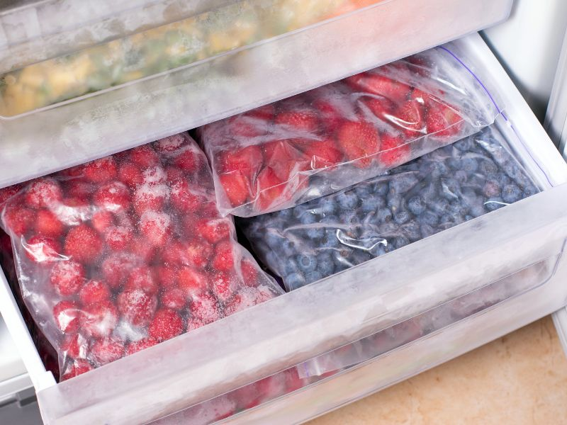
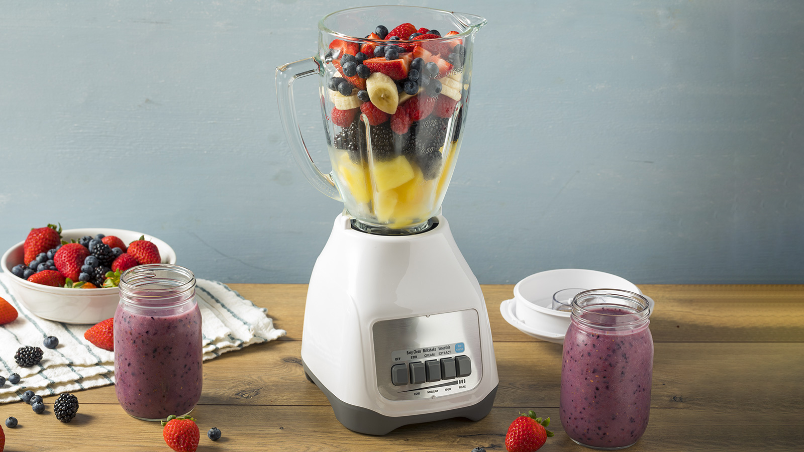
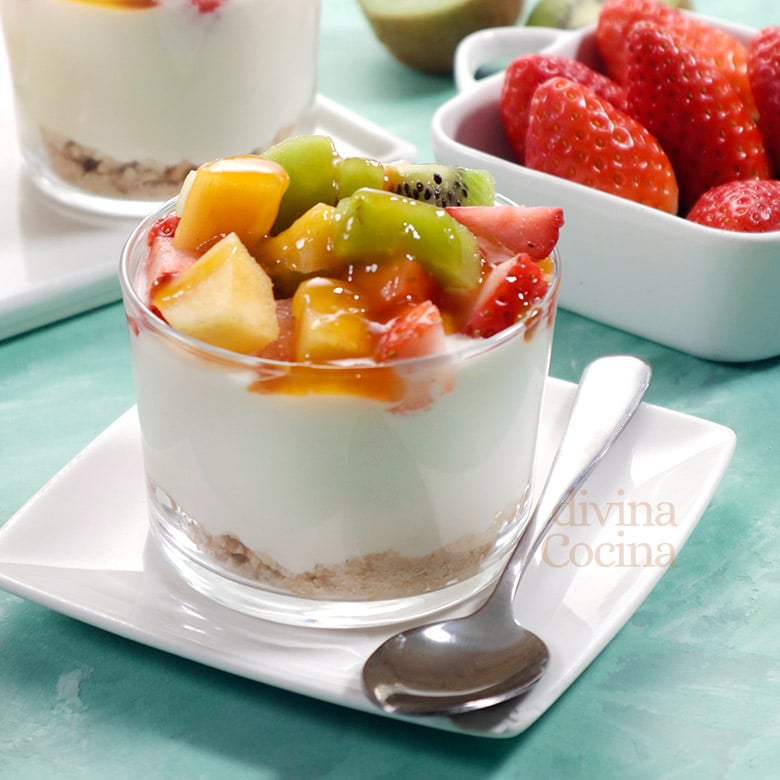

Volver al menu
Receta helado de frutas
Ingredientes
- 2 plátanos maduros
- 1 taza de fresas (puedes usar cualquier fruta que prefieras)
- 1/2 taza de yogur natural (opcional)
- 1-2 cucharadas de miel o azúcar (opcional, según tu gusto)
Pasos a paso
- Pela los plátanos y corta las fresas en mitades. Si usas otras frutas, asegúrate de que estén limpias y cortadas en trozos.

- Coloca los plátanos y las fresas en una bandeja y congélalas durante al menos 2 horas, o hasta que estén completamente congeladas.

- Una vez congeladas, coloca las frutas en una licuadora o procesador de alimentos. Agrega el yogur y la miel (si decides usarla). Mezcla hasta obtener una textura cremosa y homogénea.

- Puedes servir el helado inmediatamente para una textura suave, o transferirlo a un recipiente y congelarlo por 1-2 horas más para que esté más firme.
- Sirve en copas, conos o un bol y disfruta de tu helado de frutas casero. ¡Puedes decorarlo con trozos de fruta fresca o un chorrito de miel!
Resultado final
